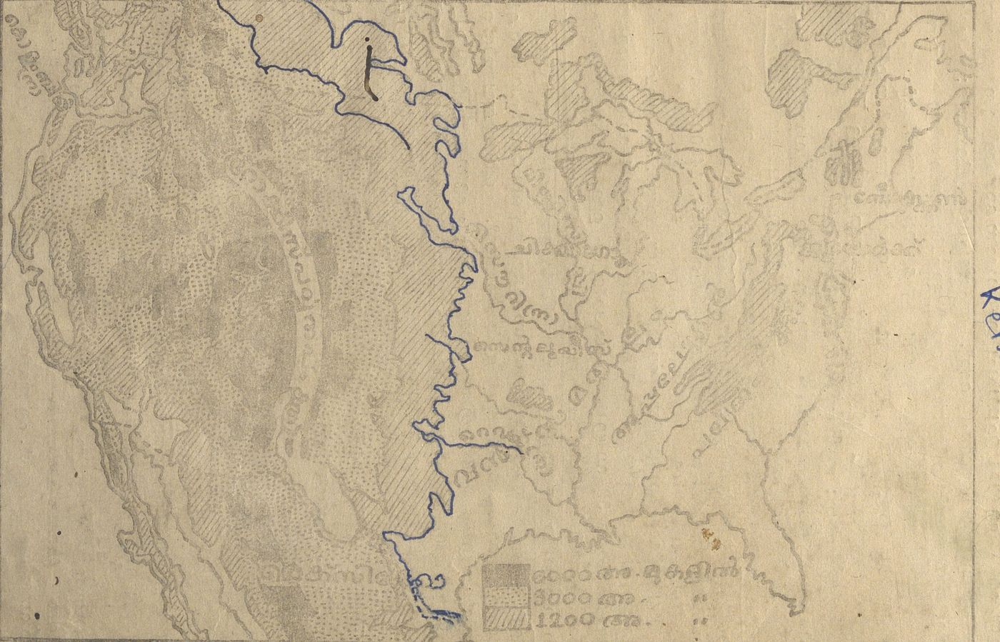

അമേരിക്കൻ ഐക്യനാട്ടിലെ (യു. എസ്. ഏ.) ബഹുഭൂരിപക്ഷം ആളുകളും ഇ-
ന്നു്, സ്വന്തം മാതൃഭാഷയെന്ന പോലെ തന്നെ ഇംഗ്ലീഷ് സംസാരിക്കുന്നവരാണു്.
എങ്കിലും അവരുടെ ഉച്ചാരണത്തിൽ പ്രകടമായ അനുനാസികത്വം ഉണ്ടു്. അവരു-
ടെ ശൈലികളും കല്പനകളും ആംഗലേയരിൽ പലർക്കും മനസ്സിലാക്കാൻ പ്രയാസം.
ഭാഷയൊന്നു തന്നെ, എങ്കിലും വ്യത്യസ്തം. പല അമേരിക്കൻ ആശയങ്ങളും സ്ഥാ-
പനങ്ങളും ഇംഗ്ലണ്ടിന്റെ ആശയങ്ങളും സ്ഥാപനങ്ങളും പോലെ തന്നെയാണു്;
എങ്കിലും വ്യത്യാസമുണ്ടു്. ഉദാഹരണത്തിനു് ഇംഗ്ലണ്ടിലെ പാർലമെന്റിനു തു-
ല്യമാണു് യുണൈറ്റഡ് സ്റ്റേറ്റ്സിലെ കോൺഗ്രസ്. ബ്രിട്ടീഷ് കോമൺസ്
സഭ പോലെ അതു് ജനങ്ങളുടെ പ്രാതിനിധ്യം വഹിക്കുന്നു. ജനങ്ങളുടെ വോട്ടു്
കൊണ്ടു് അതിലെ അംഗങ്ങളെ തിരഞ്ഞെടുക്കുന്നു. അങ്ങനെ തിരഞ്ഞെടുക്കപ്പെ-
ടുന്ന അംഗങ്ങൾ രാഷ്ട്രീയകക്ഷികളിൽ പെട്ടവരാണു താനും. എന്നാലും, കോൺ-
ഗ്രസ്സിന്റെയും കോമൺസഭയുടെയും പ്രവർത്തനവിധങ്ങൾ തമ്മിൽ വലിയ വ്യ-
ത്യാസം ഉണ്ടു്. ഒരു ഉദാഹരണം : അമേരിക്കൻ മന്ത്രിസഭയിലെ അംഗങ്ങൾക്കു്
കോൺഗ്രസ്സിൽ സംബന്ധിക്കുവാൻ അവകാശമില്ല. അമേരിക്കയിലെയും ബ്രി-
ട്ടനിലെയും രാഷ്ട്രീയകക്ഷികളുടെ ലക്ഷ്യങ്ങൾ തന്നെ വളരെ വിഭിന്നമാണു്.
യു. എസ്. ഏ യിലെ ആദ്യത്തെ അധിനിവേശകരിലധികവും ബ്രിട്ടീഷു-
കാരായിരുന്നതു കൊണ്ടാണു് അവിടത്തെ ഭാഷ ഇംഗ്ലീഷായി തീർന്നതു്. അതേ
കാരണം കൊണ്ടു തന്നെ അമേരിക്കയിലെ ആശയഗതികളും സ്ഥാപനമാതൃകകളും
ബ്രിട്ടന്റെതിനോടു് സാദൃശ്യമുള്ളതായിത്തീർന്നു. വ്യത്യാസം ഉണ്ടായതു് രണ്ടു കാര-
ണത്താലാണു്. ഒന്നാമതു്1 മറ്റു പല രാജ്യക്കാരും യു. എസ്. ഏ യുടെ വളർച്ച-
യ്ക്കു് സഹായിച്ചിട്ടുണ്ടു്. സ്പെയിൻകാരും ഫ്രഞ്ചുകാരും ആയിരുന്നു വടക്കെ അമേ-
രിക്കയിലെത്തിയ ആദ്യത്തെ അന്വേഷകസംഘങ്ങൾ. പതിനേഴും പതിനെ-
ട്ടും ശതാബ്ദങ്ങളിൽ ആയിരക്കണക്കിനു് ആഫ്രിക്കൻ നീഗ്രോകളെ അമേരിക്ക-
യിൽ അടിമകളായി കൊണ്ടു വന്നു. പത്തൊൻപതാം ശതകത്തിൽ യൂറോപ്പിൽ
നിന്നു് അമേരിക്കയിലേക്കു് പ്രവഹിച്ച അധിനിവേശകരിൽ ഐർലൻഡുകാർ,
ജർമൻകാർ, സ്കാൻഡിനേവിയക്കാർ, ഇറ്റാലിയൻമാർ, സ്ലാവുകൾ എന്നിവ-
രെല്ലാം ഉൾപ്പെട്ടിരുന്നു. അവരെല്ലാം തങ്ങളുടെ മുദ്രകൾ അവിടെ പതി-p. 22അമേരിക്കൻ ഐക്യനാടിന്റെ ചരിത്രംപ്പിച്ചിട്ടുണ്ടു്. സുപരിചിതവും ശ്രദ്ധേയവും ആയ രണ്ടു് ഉദാഹരണം പറയാം.
കാലിഫോർണിയയിലെ ഏറ്റവും വലിയ രണ്ടു നഗരങ്ങൾക്കു് ഇപ്പോഴും സ്പാ-
നിഷ് പേരാണു്. മധ്യപശ്ചിമദേശത്തെ ഒരു വലിയ പട്ടണത്തിന്റെ പേരു്
സെന്റു് ലൂയിസ് എന്നും.
അമേരിക്കൻ സംസ്കാരം ആംഗലസംസ്കാരത്തിന്റെ വെറും പകർപ്പല്ലാതിരി-
ക്കുന്നതിന്റെ രണ്ടാമത്തെ കാരണം യു. എസ്. ഏ. യുടെ ഭൂമിശാസ്ത്രപരമായ സ-
വിശേഷതയാണു്. യൂറോപ്പിൽ നിന്നു വന്ന അധിനിവേശകരുടെയും അവരുടെ
പരമ്പരകളുടെയും ഭാഗധേയങ്ങൾ രൂപപ്പെടുത്തിയതും കുരുപ്പിടിപ്പിച്ചതും അവർ
പാർപ്പു് ഉറപ്പിച്ച ഭൂമിയാണു്. തങ്ങൾ എവിടെ താമസിക്കണമെന്നും ഏതു
ജീവിതവൃത്തി കൈക്കൊള്ളണമെന്നും അവരെക്കൊണ്ടു് തീരുമാനമെടുപ്പിച്ചതു
നാട്ടിന്റെ ഭൂപ്രകൃതിയും ശീതോഷ്ണാവസ്ഥയും ആണു്. ചില പ്രദേശങ്ങൾ അവ-
രെ ആകർഷിച്ചു. ചിലേടങ്ങൾ അവർക്കു് ഇഷ്ടപ്പെട്ടില്ല. ജീവിക്കാൻ തിര-
ഞ്ഞെടുത്ത പ്രദേശങ്ങൾ, പുതിയ ജീവിതചിന്തകളും ജീവിതശീലങ്ങളും അ-
വർക്കു് നൽകി. അവ അധിനിവേശകരുടെ ജീവിതവീക്ഷണം തന്നെ പരിവ-
ർത്തനം ചെയ്തു. ഇംഗ്ലീഷ്കാരനെയും ജർമൻകാരനെയും ഇറ്റാലിയനെയും അ-
യർലണ്ടുകാരനെയും റഷ്യക്കാരനെയും അമേരിക്കക്കാരാക്കി മാറ്റിയതു് ഐ-
ക്യനാടിന്റെ ഭൂമിശാസ്ത്രമാണു്. അമേരിക്കൻ ചരിത്രത്തിന്റെ പശ്ചാത്തലം
അമേരിക്കൻ ഭൂമിശാസ്ത്രമത്രെ.
അമേരിക്കൻ ഭൂമിശാസ്ത്രത്തിന്റെ ശ്രദ്ധേയമായ പ്രത്യേകത അതിന്റെ വി-
സ്തൃതിയാണു്. വിശേഷിച്ചും, കുടിയേറ്റത്തിനു വന്നവരുടെ ജന്മഭൂമികളുടെ
വലിപ്പവുമായി താരതമ്യപ്പെടുത്തുമ്പോൾ. അലാസ്കയും ഹാവായിയും ഉൾ-
പ്പെടെ യു. എസ്. ഏ യുടെ വിസ്താരം 3554000 ചതുരശ്രമൈലാണു്. റഷ്യ
ഒഴികെയുള്ള യൂറോപ്പിന്റെ വിസ്തൃതി ഏതാണ്ടു് ഇതിൽ പകുതിയേ വരൂ.
ടെക്സാസ് എന്ന ഒറ്റ സ്റ്റേറ്റിനു് ഇംഗ്ലണ്ടിന്റെ അഞ്ചിരട്ടി വലിപ്പമുണ്ടു്. യു.
എസ്. വൻകരയുടെ കിഴക്കും പടിഞ്ഞാറും കിടക്കുന്ന കടൽതീരത്തിനു് 1500
മൈൽ വീതം നീളമുണ്ടു്. അതിന്റെ കനേഡിയൻ അതിർത്തിയുടെ നീളം 3,000
മൈൽ വരും. എന്നാൽ ഒരു രാജ്യത്തിന്റെ വിസ്താരം കൊണ്ടു് മാത്രം ആളുകൾ
ആകർഷിക്കപ്പെടുകയില്ല. ആസ്ത്രേലിയയുടെ വിസ്തൃതി 3000000 ചതു-
രശ്രമൈലാണു്. എന്നാൽ 11000000 മാത്രമാണു് അവിടത്തെ ജനസംഖ്യ. അത-
യതു് യു. എസ്. ഏ. യിലെ ജനസംഖ്യയുടെ ആറു ശതമാനം. യു. എസ്. ഏ. യു-
ടെ സമശീതോഷ്ണവും എന്നാൽ വൈവിധ്യപൂർണവും ആയ കാലാവസ്ഥയും സമ്പ-
ന്നമായ പ്രകൃതിവിഭവങ്ങളുമാണു് കുടിയേറ്റക്കാരെ അങ്ങോട്ടേക്കാകർഷിച്ചതു്
യു. എസ്. ഏ. യുടെ വികസനത്തിനും വളർച്ചയ്ക്കും സഹായകമായി നിന്ന ഘ-
ടകങ്ങളും ഇവ തന്നെയായിരുന്നു.

Image shown turned upright (the map is printed sideways on the page).
Relief map of the United States, printed rotated 90° on the page (north towards the left edge; read upright by turning the page 90° clockwise) inside a ruled frame. It shows elevation shading in three bands, rivers, state and regional boundaries, and place labels. The caption is printed outside the right edge of the frame.
Reader's blue-ink tracing along the map's Gulf and Atlantic coastline (hand: blue-ink).